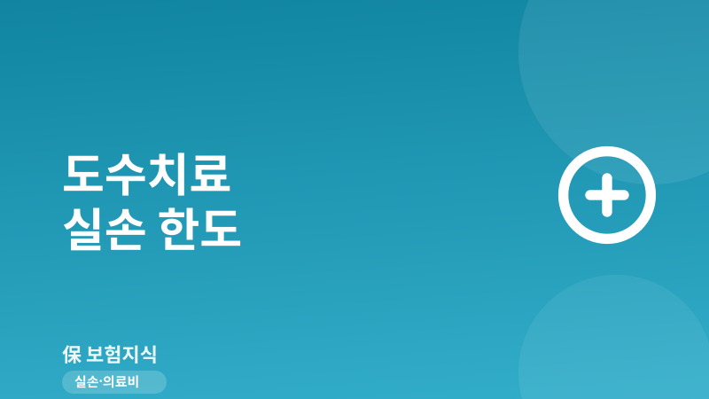
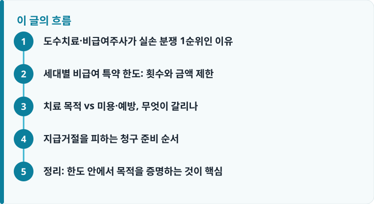

도수치료·비급여주사는 실손에서 보장되지만, 3·4세대는 별도 특약으로 연간 횟수·금액 한도가 걸려 있어 무제한이 아닙니다.
치료 목적이 진료기록으로 입증되어야 하며, 미용·예방·건강증진 목적은 애초에 보장 대상에서 제외됩니다.
증상 호전 없이 반복되는 도수치료는 과잉진료로 판단되어 지급이 거절되거나 중단될 수 있습니다.
도수치료·비급여주사가 실손 분쟁 1순위인 이유
도수치료와 비급여주사(예: 영양수액, 관절강내 주사, 신경차단술 관련 주사 등)는 실손보험 비급여 지급액에서 가장 큰 비중을 차지하는 항목입니다. 국민건강보험이 적용되지 않는 비급여이기 때문에 병원마다 가격이 제각각이고, 회당 5만 원에서 15만 원을 넘는 경우도 흔합니다. 그만큼 청구 건수가 많고, 동시에 보험사가 지급 심사를 가장 깐깐하게 보는 영역이기도 합니다.
문제의 핵심은 이 치료들이 ‘치료 목적’과 ‘미용·건강증진 목적’의 경계에 걸쳐 있다는 데 있습니다. 같은 도수치료라도 교통사고 후 경추 통증 재활은 치료로 인정되지만, 특별한 질환 없이 자세 교정이나 피로 회복 목적으로 받으면 보장 대상이 아닙니다. 이 경계가 애매하기 때문에 청구자와 보험사의 판단이 엇갈리고, 그 결과 도수치료·비급여주사는 실손 분쟁조정 신청에서 꾸준히 상위권을 차지합니다. 실손보험 전체 구조가 궁금하다면 실손보험 기본 구조부터 확인하면 이 글의 내용이 더 쉽게 이해됩니다.
세대별 비급여 특약 한도: 횟수와 금액 제한
실손보험은 가입 시점에 따라 1세대부터 4세대까지 보장 방식이 크게 다릅니다. 과거 초기 실손(구실손)은 비급여 도수치료를 사실상 넓게 보장했지만, 2017년 4월 이후 3세대 실손부터 도수치료·비급여주사·MRI가 ‘비급여 3대 특약’으로 분리되면서 한도가 명확히 생겼습니다.
3세대와 2021년 7월 이후 4세대 실손에서 도수치료는 통상 연간 350만 원 한도, 그리고 연간 50회까지로 제한됩니다. 다만 50회를 자동으로 다 보장하는 것이 아니라, 최초 10회 이후에는 증상 개선 등 객관적 근거가 있어야 추가 보장이 이어지는 구조입니다. 비급여주사제도 연간 250만 원·50회 수준의 한도가 적용되는 것이 일반적입니다. 자기부담률도 세대별로 달라, 급여는 20%, 비급여는 30%가 기본이며 4세대는 비급여 특약에서 30% 자기부담이 적용됩니다. 세대별 차이를 더 자세히 비교하려면 실손보험 청구 가이드를 함께 보는 것을 권합니다.
여기서 자주 놓치는 점은 ‘한도가 남아 있어도 무조건 지급되지는 않는다’는 것입니다. 연간 350만 원 한도가 있다고 해서 증상과 무관하게 50회를 받으면 다 나오는 것이 아니라, 각 회차가 치료로서 필요했는지를 별도로 심사합니다. 한도는 상한선일 뿐, 지급 조건을 충족했을 때 그 안에서 받는다는 개념으로 이해해야 합니다.

치료 목적 vs 미용·예방, 무엇이 갈리나
실손보험 표준약관은 ‘질병·상해의 치료를 직접 목적으로 한 의료비’를 보장한다고 정하고 있습니다. 따라서 도수치료라면 근골격계 질환(디스크, 협착증, 오십견, 사고 후 염좌 등)에 대한 재활이라는 진단과 치료 계획이 있어야 합니다. 반대로 체형 교정, 다이어트, 피로 회복, 미용, 단순 건강증진 목적은 표준약관상 명시적으로 보장에서 제외됩니다.
비급여주사도 마찬가지입니다. 특정 질환 치료를 위한 주사는 인정되지만, 이른바 ‘영양제·피로회복 수액’처럼 질병 치료와 직접 관련이 없는 주사는 예방·건강증진으로 보아 지급되지 않습니다. 실제 분쟁에서는 진료기록부에 기재된 상병명(질병코드)과 실제 시술 내용이 일치하는지가 결정적입니다. 상병명은 치료 목적인데 시술은 미용에 가깝다고 판단되면 거절될 수 있습니다. 이런 거절이 왜 발생하는지 유형별로 정리한 보험금 거절 사례를 보면 실제 판단 기준을 가늠하는 데 도움이 됩니다.
예를 들어 어깨 통증으로 병원을 찾아 ‘회전근개 부분파열’ 진단을 받고 도수치료와 관절강내 주사를 병행했다면 치료 목적이 뚜렷해 보장 가능성이 높습니다. 반면 특별한 진단명 없이 ‘목·어깨 뭉침’ 정도로 기록되고 같은 치료가 수십 회 반복되면, 보험사는 치료 필요성이 아니라 관리·예방 성격으로 판단할 여지가 커집니다. 결국 같은 시술이라도 진단명과 치료 경과 기록이 목적을 가르는 실질적 기준이 됩니다.
작성·검수 기준
이 글은 특정 보험사 상품을 권유하기 위한 것이 아니라, 도수치료·비급여주사를 실손으로 청구할 때 알아야 할 일반적인 기준을 설명하기 위해 작성했습니다. 비급여 특약의 연간 한도·횟수·자기부담률과 보장 제외 항목은 가입한 실손보험 세대(1~4세대)와 개별 약관, 특약 가입 여부에 따라 달라질 수 있습니다.
정확한 보장 범위와 한도는 본인 증권의 약관과 상품설명서, 그리고 표준약관 해설을 함께 확인하는 것이 가장 정확합니다.
지급거절을 피하는 청구 준비 순서
도수치료·비급여주사는 서류만 잘 갖춰도 지급거절이나 심사 지연을 크게 줄일 수 있습니다. 반복 치료로 넘어가기 전에 아래 순서를 확인하면 ‘과잉진료’로 몰려 지급이 중단되는 상황을 예방할 수 있습니다.
- 본인 실손보험 세대와 비급여 특약 가입 여부, 연간 남은 한도·횟수를 먼저 확인합니다.
- 진료기록부에 상병명(질병코드)과 치료 목적이 명확히 기재되도록 요청합니다.
- 도수치료는 회차별 증상 변화와 치료 반응이 기록되게 하여 필요성을 입증합니다.
- 비급여주사는 주사제 성분과 투여 사유가 영수증·세부내역서에 드러나게 챙깁니다.
- 고액·장기 반복 치료라면 사전에 보험사에 보장 가능 여부를 문의해 두는 것이 안전합니다.
정리: 한도 안에서 목적을 증명하는 것이 핵심
도수치료와 비급여주사는 실손으로 받을 수 있지만 ‘무제한 보장’이 아닙니다. 3·4세대는 연간 횟수와 금액 한도가 명확하고, 자기부담률 30%가 적용되며, 무엇보다 치료 목적이 진료기록으로 입증되어야 합니다. 증상 호전 없이 반복되는 치료는 과잉진료로 판단되어 지급이 거절되거나 중단될 수 있으므로, 한도 관리와 목적 입증을 동시에 신경 써야 합니다.
다른 보험 정보 글이 궁금하다면 보험지식 블로그에서 이어 읽어 보세요. 가입 전에는 반드시 약관과 상품설명서를 확인하는 것이 가장 안전한 방법입니다.